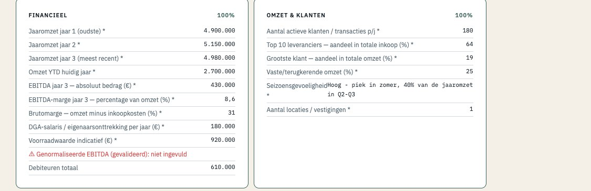
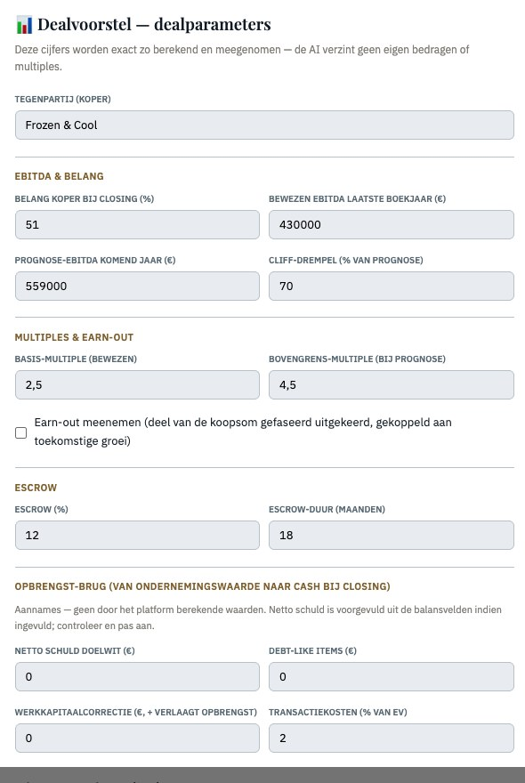
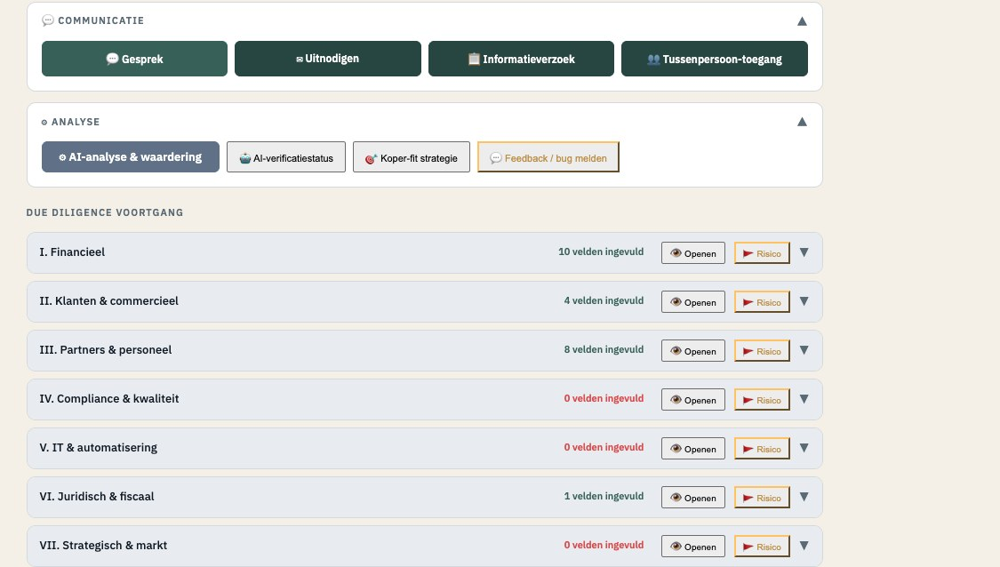
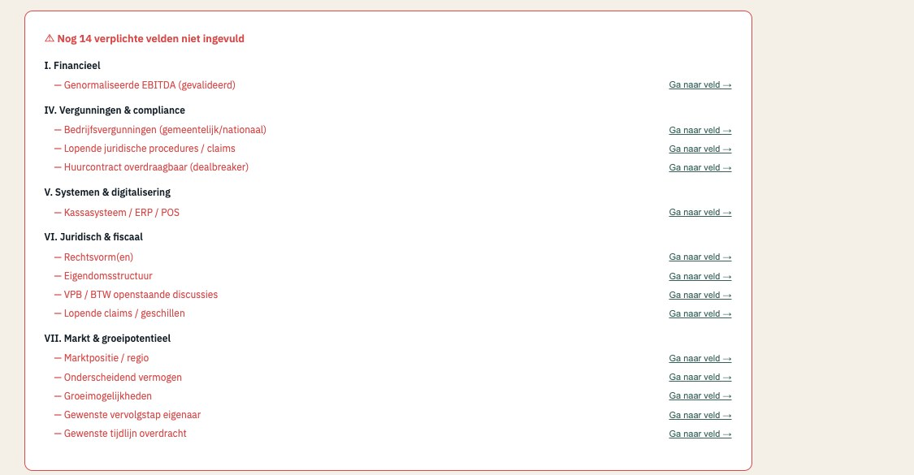
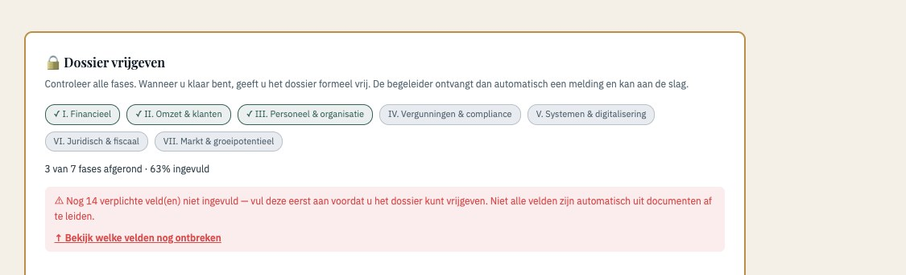

Home › Platform
Koers voor Morgen Platform
Eén traject. Eén dossier. Van voorbereiding tot closing.
Een overnametraject bestaat uit honderden documenten, tientallen vragen, openstaande acties en meerdere partijen. In de praktijk raakt dat verspreid over e-mail, Excel en losse datarooms. Het platform brengt het volledige traject samen in één beheersbare omgeving, met de adviseur als regisseur.
Het onderscheid
Een dataroom dekt één fase. Koers voor Morgen draagt het hele traject.
Een virtuele dataroom is gemaakt om documenten te delen tijdens het boekenonderzoek. Nuttig, maar het is één schakel. Een overname begint eerder, bij de voorbereiding en de strategische vraag, en eindigt later, bij de onderhandeling, de closing en de overdracht. Koers voor Morgen loopt dat hele traject mee: dezelfde omgeving en hetzelfde dossier, van de eerste voorbereiding tot na de handtekening.
Wat u krijgt
Eén omgeving voor het hele traject.
De kern
Eén compleet transactiedossier: documenten, vragen, acties, rollen en voortgang komen gedurende het hele traject op één plek samen.
Alle partijen, één omgeving
Koper, verkoper, adviseur en meekijkers werken in hetzelfde dossier, elk met hun eigen beeld.
Dataroom per DD-categorie
Financieel, commercieel, personeel & partners, juridisch & fiscaal, IT. Elk stuk landt per fase op zijn plek.
Q&A en acties bij de stukken
Elke vraag en openstaande actie hangt aan het document waar hij over gaat; overleggen en besluiten in dezelfde context.
Rollen & fase-toegang
Iedereen ziet alleen wat bij zijn rol en de huidige fase hoort. Interne stukken van de adviseur blijven intern.
Voortgang per fase
Dekking, signalen en openstaande punten in één beeld, zichtbaar voor iedereen die eraan werkt.
De intelligentielaag: wat het platform onderscheidt
Documentdekking
Per fase een lijst van wat verwacht wordt en wat binnen is. Gaten zijn zichtbaar vóór ze het traject vertragen.
Herleidbaarheid naar de bron
Elke overgenomen waarde is aanklikbaar tot de bladzijde in het brondocument. Geen overgetypte getallen zonder herkomst.
AI-signalen
Ontbrekende documenten, afwijkingen tussen stukken, openstaande acties. Gemeld in de context van het dossier, nooit als aanname. Zo werkt het →
Extra functionaliteit: modules naar keuze
Contracten vanuit het traject
NDA, LOI, biedingsbrief en exclusiviteit, opgesteld vanuit de gegevens in het dossier.
Rapportage & export
Het volledige dossier als geordend pakket naar buiten, of een tussenrapport per fase.
Meekijkers, read-only
Een financier of collega leest mee zonder te wijzigen; toegang op elk moment intrekbaar.
Anonieme koper-matching (bèta)
Binnen een lopend traject gericht extra kopers bereiken op sector en regio. Hoe →
Eigen huisstijl
Platformnaam, accentkleur, logo, adres en KvK-nummer. Uw cliënten werken in úw omgeving.
Voor adviseurs
Gereedschap voor uw eigen praktijk. Geen partij die uw rol overneemt.
Eigen trajecten, eigen klanten, eigen workflow, eigen regie. U werkt onder uw eigen naam met een trajectlimiet en modules naar keuze (contracten, AI-analyse, Q&A, export, meekijkers, matching (bèta)). U bent klant van het platform; Marcel hoeft er niet bij.
AI die het dossier bewaakt
De AI signaleert. U beslist.
Het platform leest mee met het dossier en geeft drie soorten signaal, en verder niets. Het vult geen velden in en doet geen aanname.
Ontbrekend document
"Voor fase 2 ontbreekt de huurovereenkomst van het kantoorpand." Een gat in de dekking, benoemd voordat het een probleem wordt.
Afwijking tussen documenten
"De omzet in de jaarrekening wijkt af van het klantenoverzicht." Het platform legt de stukken naast elkaar; de adviseur beoordeelt.
Actie vereist
"Deze vraag staat 9 dagen open." Openstaande punten en acties blijven zichtbaar tot ze zijn afgerond.

Herleidbaar
Elke waarde herleidbaar naar het brondocument.
Cijfers die in het platform staan, zijn aanklikbaar tot de bladzijde in het document waar ze vandaan komen. Geen overgetypte getallen zonder herkomst. Wie het dossier later leest, of dat nu een koper, een financier of een accountant is, kan elke waarde terugvinden.
AI helpt. Bij twijfel doet het systeem geen aanname, maar meldt het. De beoordeling blijft mensenwerk.

Zo werkt het
Zo loopt een deal door het platform.
Eén fictief traject, stap voor stap, met de echte schermen.
Dossier aangemaakt
Traject, rollen en fasen ingericht. Iedereen werkt vanaf hier in dezelfde omgeving.
Documenten gestructureerd
Elk stuk landt in de due-diligence-categorie en de fase waar het hoort. Uploaden gebeurt één keer; daarna staat het op de goede plek voor iedereen.

AI signaleert ontbrekende informatie
"Voor fase 2 ontbreekt de huurovereenkomst van het kantoorpand." Een gat in de dekking, benoemd voordat het een probleem wordt.
Afwijking gevonden
"De omzet in de jaarrekening wijkt af van het klantenoverzicht." De stukken komen naast elkaar; welke leidend is, bepaalt de adviseur.

Vraag uitgezet
Gekoppeld aan het brondocument en de bladzijde waar het over gaat, niet als losse e-mail.
Actie toegewezen
Met een eigenaar en een datum. Openstaande punten blijven zichtbaar tot ze zijn afgerond en aan het juiste stuk gekoppeld.
Voortgang zichtbaar
Dekking per fase, de signalen en wat er nog moet komen, in één beeld voor iedereen die eraan werkt.

Beveiliging & gegevens
Zo gaan we om met uw transactiedata.
Opslag in de EU (Frankfurt, ISO 27001 / SOC 2), versleuteld transport, rol- en fase-toegang, meekijkers read-only en intrekbaar, AI-verwerking onder standaard contractbepalingen, verwijdering na 14 dagen, en een technisch afgedwongen scheiding tussen trajecten van verschillende adviseurs.
De volgende stap
In een demo van 30 minuten laat Marcel het platform zien op een fictief traject: dataroom, fases, rollen, AI-signalen. Daarna weet u of het bij uw praktijk past.